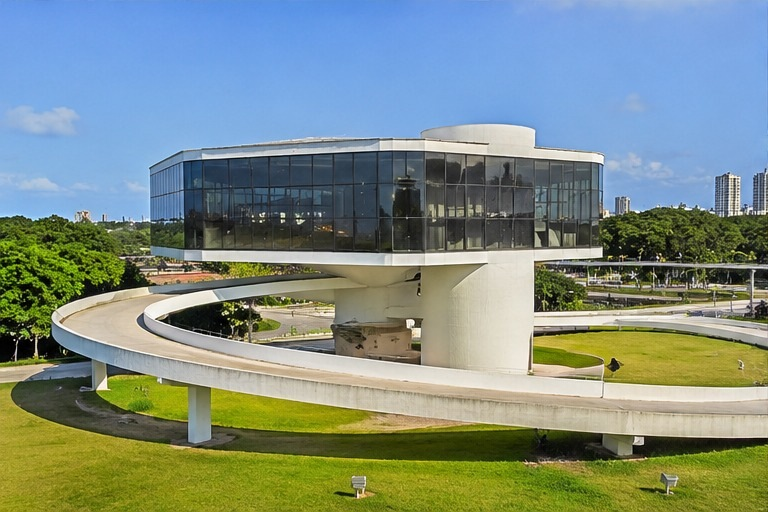
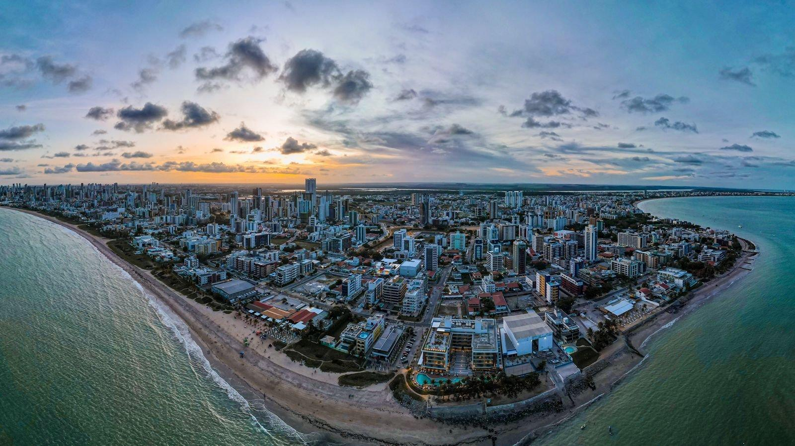
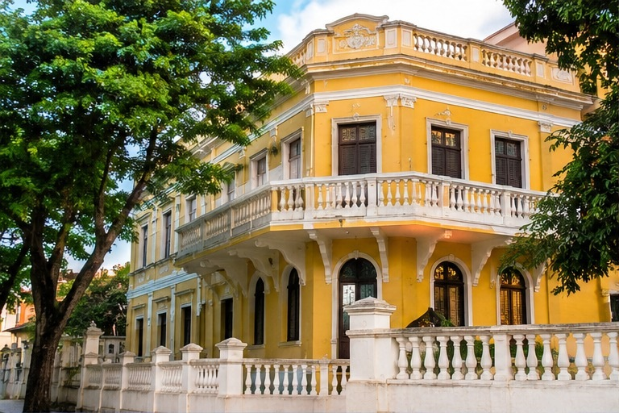
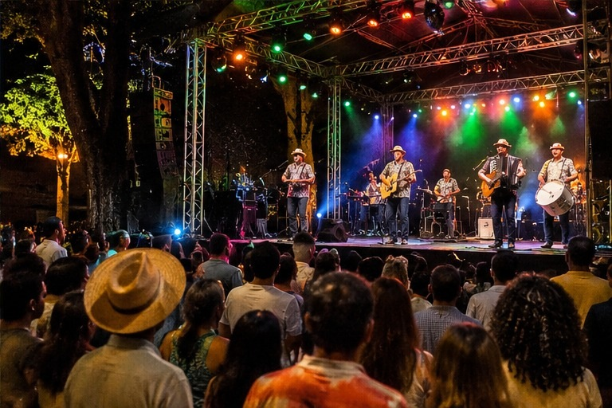

Estação Cabo Branco
Um dos símbolos mais reconhecidos da cidade, com vista panorâmica para o mar, arquitetura marcante e ambiente perfeito para passeios e fotos.
João Pessoa: história, turismo e cultura
Conheça os melhores lugares para visitar, os eventos da cidade e a atmosfera acolhedora que torna João Pessoa uma das capitais mais bonitas do Brasil.
Veja os pontos turísticos

Um dos símbolos mais reconhecidos da cidade, com vista panorâmica para o mar, arquitetura marcante e ambiente perfeito para passeios e fotos.

A orla é um dos cartões-postais da capital paraibana, com praias, calçadas, coqueiros e uma paisagem que encanta moradores e visitantes.

A cidade guarda história em seus casarões, ruas tradicionais e pontos de encontro cultural que revelam a essência da capital paraibana.

Confira a programação de shows, festas populares, exposições e atividades culturais que animam a capital ao longo do ano.
Antes de divulgar um evento, confirme data, horário, local e informações em fontes confiáveis para garantir a atualização da programação.